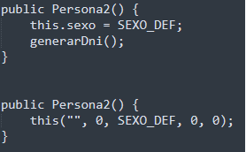

Crea una clase llamada Paciente que cumpla las siguientes condiciones:
1. Sus atributos son: nombre, edad, DNI, sexo (H hombre, M mujer), peso y altura. Si quieres añadir algún atributo puedes hacerlo. OJO: recuerda que no queremos que se acceda directamente a ellos.
2. Todos los atributos menos el DNI podrán admitir valores nulos según su tipo (0 números, cadena vacía para String, etc.). Sexo será "X". Usa una constante para ello.
3. Método generarDNI(): genera un número aleatorio de 8 cifras, y a partir de este número, su letra correspondiente. La forma de calcularlo es la siguiente:
- El número del DNI obtenido aleatoriamente se divide entre 23, y se coge el resto de esa división.
- Cada resto tiene asignada una letra específica según una tabla predeterminada. Usa el siguiente vector como referencia para el orden:
letras[] = {'T', 'R', 'W', 'A', 'G', 'M', 'Y',
'F', 'P', 'D', 'X', 'B', 'N', 'J', 'Z',
'S', 'Q', 'V', 'H', 'L', 'C', 'K', 'E'};
Este método será invocado cuando se construya el objeto. No debe ser visible al exterior, ya que se trata de un cálculo interno cada vez que se instancia un objeto desde otra clase.
4. Se implantarán varios constructores:
- Un constructor con todos los atributos como parámetros.
- Un constructor por defecto.
Prueba de estas dos formas...

¿Funciona igual? ¿Por qué?
- Un constructor con el nombre, edad y sexo, el resto por defecto.
5. Los métodos que se implementarán son:
- calcularIMC(): calculará si la persona esta en su peso ideal (peso en kg)/(altura^2 en metros). Usa el método Math.pow
- Si esta fórmula devuelve un valor menor que 20, la función devuelve un -1.
- Si devuelve un número entre 20 y 25 (incluidos), significa que esta por debajo de su peso ideal la función devuelve un 0 y,
- Si devuelve un valor mayor que 25 significa que tiene sobrepeso, la función devuelve un 1.
Usa constantes para devolver estos valores.
- esMayorDeEdad(): indica si es mayor de edad, devuelve un booleano.
- comprobarSexo(char sexo): comprueba que el sexo introducido es correcto. Si no es correcto, será "X". No será visible al exterior.
- mostrarInfoPaciente(): devuelve toda la información del objeto.
- Métodos get/set de cada parámetro, excepto del atributo DNI.
6. Ahora, crea una clase ejecutable que haga lo siguiente:
- Pide por teclado el nombre, la edad, sexo, peso y altura.
- Crea 3 objetos de la clase anterior:
- El primer objeto obtendrá las anteriores variables pedidas por teclado.
- El segundo objeto obtendrá todos los anteriores menos el peso y la altura.
- El último por defecto. Para este último, utiliza los métodos set para darle un valor a los atributos después de crearlo.
- Para cada objeto, el programa principal deberá comprobar si está en su peso ideal, tiene sobrepeso o por debajo de su peso ideal con un mensaje.
- Indicar para cada objeto si es mayor de edad.
- Por último, mostrar la información de cada objeto.